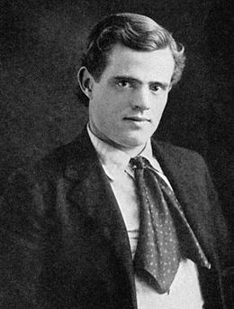

Джек Ло́ндон / Jack London
{kind=link}

Джек Ло́ндон (англ. Jack London, справжнє ім'я — Джон Ґріффіт Че́йні, англ. John Griffith Chaney; 12 січня 1876, Сан-Франциско — 22 листопада 1916, Глен-Еллен, Каліфорнія) — американський письменник, громадський діяч, соціаліст. Широко відомий у багатьох країнах світу як автор пригодницьких оповідань і романів.
Найвідоміші твори — «Біле Ікло», «Поклик предків» та «Любов до життя», в яких розгортаються події у часи Клондайкської золотої лихоманки. Джек Лондон також був новатором у жанрі, який пізніше розвинувся та став відомим як наукова фантастика.
Джек Лондон: Співець північної мужності та незламного духу
Джон Гріффіт Чейні, відомий світові як Джек Лондон (1876–1916), став справжнім символом американської літератури початку XX століття. Його життя було не менш захопливим, ніж його романи: він був моряком, "устричним піратом", золотошукачем на Алясці та військовим кореспондентом. Саме цей багатий життєвий досвід ліг в основу його творів, сповнених суворої реальності, боротьби за виживання та величі людського духу.
Біографія: Крізь терни до зірок
Дитинство
Коли йому було біля 8 місяців, його мати одружилася з фермером Джоном Лондоном, який усиновив маленького Джека Ґріффіта і дав йому своє прізвище.
Джек Лондон рано почав працювати: ще школярем продавав ранішні та вечірні газети. Після закінчення початкової школи, у 14 років, влаштувався на консервну фабрику робітником. Робота була дуже важкою, і він пішов з фабрики. Був «піратом на устриць»: ловив устриці в бухті Сан-Франциско, що було заборонено. У цей час вживав надмірну як для свого віку кількість алкоголю. Його товариші на службі вважали, що якщо він не змінить спосіб життя, то помре через рік-два.
Юність
У 1893 році найнявся матросом на промислову шхуну, яка вирушала ловити котиків до берегів Японії і в Беринговому морі. Перше плавання дало Лондону багато яскравих вражень, які лягли потім в основу багатьох його морських розповідей і романів.
Перший нарис Лондона «Тайфун біля берегів Японії», за який він здобув премію однієї з газет Сан-Франциско, став початком його літературної кар'єри.
Перші пригоди
У 1897 році Лондон разом з 62-річним чоловіком своєї сестри подалися на Клондайк шукати золота. Їхній маршрут пролягав через Юно, Скаґуей і Даї, і далі — через Чілкутський перевал до озера Лінденберґ і по Юкону — до Доусон-Сіті. Чоловік сестри незабаром повернувся додому, а Джек продовжував подорож із новими компаньйонами. До Доусона вони не допливли, а зупинилися за 100 км у покинутому зрубі. Там Джек прожив до наступного літа.
Золота на зареєстрованій ними ділянці не виявилося, проте Джек мав змогу наслухатися численних історій і приповідок про життя золотошукачів. Навесні цинга сильно підірвала його здоров'я, лікуватися було нічим, і він вирішив повернутися додому. Щоб не повторювати знову маршрут, він із компаньйонами спорудив човен і спустився Юконом до Берингового моря (майже 2500 км). Пережите за цей рік стало основою його оповідань, які принесли йому успіх і славу.
Творчість
В результаті з'явились збірки розповідей: «Син Вовка» (Бостон, 1900), «Бог його батьків» (Чикаго, 1901), «Діти морозу» (Нью-Йорк, 1902), «Віра в людину» (Нью-Йорк, 1904), «Місячне лице» (Нью-Йорк, 1906), «Втрачене лице» (Нью-Йорк, 1910), а також романи «Дочка снігів» (1902) і «Морський вовк» (1904), які створили письменникові щонайширшу популярність. Варто зауважити, що перші збірки оповідань виявили найвищий рівень літературної майстерності Джека Лондона. Решта творів, які були написані після здобуття широкого визнання, позначені трафаретністю, псевдохудожністю та не мали серед читачів великого успіху
Подорожі
В 1907—1909 роках здійснив плавання на яхті «Снарк», в кінці якого написав роман «Мартін Іден». Історія подорожі викладена в автобіографічному нарисі «Подорож на яхті „Снарк“» (1911 рік).
З липня по вересень 1911 року Джек Лондон також здійснив кінні подорожі Каліфорнією та сусідніми штатами, які описав в оповіді «Четвіркою коней на північ від затоки».
Лондон став одним із перших письменників, хто зміг заробити літературною працею величезні статки, завдяки своїй феноменальній працездатності (він писав по 1000 слів щодня) та вмінню поєднувати пригодницький сюжет із глибокими філософськими роздумами про соціалізм, дарвінізм та силу волі.
Список основних творів (Хронологія)
| Рік | Назва українською | Оригінальна назва (English) | Жанр / Короткий опис |
|---|---|---|---|
| 1900 | Син вовка | The Son of the Wolf | Збірка оповідань; перші "північні" оповідання про Клондайк. |
| 1901 | Бог його батьків | The God of His Fathers | Збірка оповідань; конфлікт культур на дикій півночі. |
| 1902 | Дочка снігів | A Daughter of the Snows | Роман; перший великий твір автора про життя на Алясці. |
| 1902 | Діти морозу | Children of the Frost | Збірка оповідань; погляд на світ очима корінних народів Півночі. |
| 1903 | Люди безодні | The People of the Abyss | Документальний роман; соціологічне дослідження життя бідняків Лондона. |
| 1903 | Поклик предків | The Call of the Wild | Повість; історія пса Бека та його повернення до дикої природи. |
| 1904 | Чоловіча вірність | The Faith of Men | Збірка оповідань; психологічні замальовки золотошукачів. |
| 1904 | Морський вовк | The Sea-Wolf | Роман; психологічне протистояння на промисловій шхуні. |
| 1905 | Гра | The Game | Повість; трагічна історія про боксера та його останній бій. |
| 1905 | Війна класів | War of the Classes | Збірка есе; виклад соціалістичних поглядів автора. |
| 1906 | Біле Ікло | White Fang | Роман; шлях дикого вовка до одомашнення та вірності. |
| 1906 | Оповіді рибальського патруля | Tales of the Fish Patrol | Збірка оповідань; пригоди на службі в затоці Сан-Франциско. |
| 1907 | До Адама | Before Adam | Роман; антропологічна фантазія про життя первісних людей. |
| 1907 | Дорога | The Road | Автобіографічні нариси; спогади про часи бродяжництва. |
| 1907 | Любов до життя | Love of Life and Other Stories | Збірка оповідань; про незламну силу волі людини. |
| 1908 | Залізна п’ята | The Iron Heel | Роман; антиутопія про олігархічну диктатуру в США. |
| 1909 | Мартін Іден | Martin Eden | Роман; трагедія творчої особистості в капіталістичному світі. |
| 1910 | Час не чекає (Буйний день) | Burning Daylight | Роман; історія успіху та повернення до витоків мільйонера з Клондайку. |
| 1910 | Революція та інші есе | Revolution and Other Essays | Збірка соціально-політичних праць. |
| 1911 | Пригода | Adventure | Роман; події на плантаціях Соломонових островів. |
| 1911 | Син Сонця | A Son of the Sun | Збірка оповідань; морські пригоди Девіда Гріфа в Океанії. |
| 1911 | Подорож на «Снарку» | The Cruise of the Snark | Документальна повість; опис навколосвітньої подорожі. |
| 1912 | Червона чума | The Scarlet Plague | Повість; постапокаліптика про загибель цивілізації від вірусу. |
| 1912 | Смок Беллью | Smoke Bellew | Збірка оповідань; гумористичні пригоди журналіста на Клондайку. |
| 1913 | Лютий звір | The Abysmal Brute | Повість; критика корупції у професійному боксі. |
| 1913 | Місячна долина | The Valley of the Moon | Роман; пошук щастя робітничої пари в сільському господарстві. |
| 1913 | Джон Ячмінне Зерно | John Barleycorn | Автобіографічний роман; відверта історія боротьби з алкоголізмом. |
| 1914 | Заколот на «Ельсінорі» | The Mutiny of the Elsinore | Роман; морська подорож навколо мису Горн. |
| 1915 | Міжзоряний мандрівник | The Star Rover | Роман; містика та реінкарнація як втеча від тюремних тортур. |
| 1916 | Маленька господиня великого будинку | The Little Lady of the Big House | Роман; любовний трикутник на фоні ідеального фермерського господарства. |
| 1917 | Джеррі-острів’янин | Jerry of the Islands | Повість; пригоди тер'єра на островах Океанії (посмертно). |
| 1917 | Майкл, брат Джеррі | Michael, Brother of Jerry | Повість; захист прав тварин через долю циркового пса (посмертно). |
| 1920 | Серця трьох | Hearts of Three | Роман; пригодницька історія пошуку скарбів майя (посмертно). |
Що читати в першу чергу та чому?
Топ-5 творів Джека Лондона, які варто прочитати:
- «Мартін Іден» — Напівавтобіографічний роман про простого моряка, який вирішив стати відомим письменником заради кохання. Це потужна історія про соціальну нерівність, виснажливу самоосвіту та розчарування в успіху.
- «Поклик предків» — Історія собаки на ім'я Бек, який потрапляє з сонячної Каліфорнії в суворі сніги Аляски. Це розповідь про пробудження первісних інстинктів та справжню свободу.
- «Морський вовк» — Психологічний трилер, дія якого відбувається на шхуні. Протистояння інтелігента Хемфрі Ван-Вейдена та жорстокого капітана Вовка Ларсена — це зіткнення гуманізму та ніцшеанського ідеалу "надлюдини".
- «Біле Ікло» — Дзеркальне відображення «Поклику предків». Повість про дикого вовка, який завдяки терпінню та доброті людини стає відданим другом. Шедевр анімалістичної прози.
- «Любов до життя» (оповідання) — Неймовірна історія про золотошукача, який, покинутий товаришем, помираючи від голоду та травм, перемагає смерть і хворого вовка завдяки несамовитій жазі до життя.
Де почитати та завантажити книги Джека Лондона
Інформація про автора та твори:
- The Jack London Online Archive — найповніший англомовний ресурс про Джека Лондона: біографія, фото, тексти.
- Britannica - Jack London — ґрунтовна стаття про життєвий шлях письменника.
Читати онлайн та завантажити (Українською):
- Е-бібліотека «Чтиво» — великий вибір творів Джека Лондона у класичних перекладах.
- УкрЛіб — біографія та основні твори онлайн.
Читати онлайн та завантажити (Original English):
- Project Gutenberg — безкоштовні електронні книги, які перейшли у суспільне надбання.
- Standard Ebooks — якісно зверстані електронні версії книг Джека Лондона.
- Американська література - Джек Лондон — твори Джека Лондона в оригіналі (англійською).